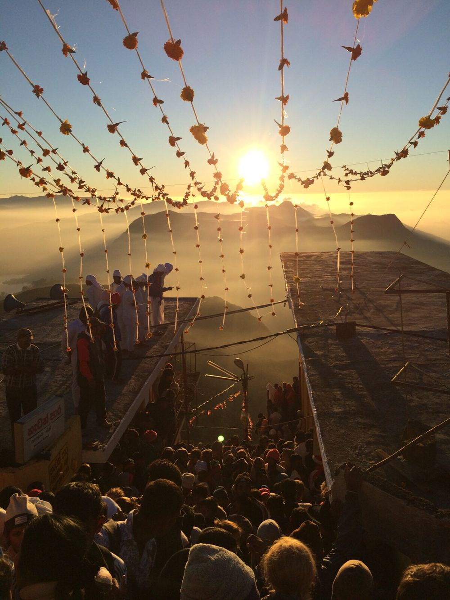

Sri Pada Pilgrimage Season
The striking pyramid of Adam's Peak (7,360 ft) is one of Sri Lanka's most sacred sites. A footprint-like depression at the summit is venerated by Buddhists, Hindus, Muslims, and Christians alike. The season begins in January, attracting thousands of pilgrims who climb the peak by torchlight to witness the spectacular sunrise.
LEARN MORE